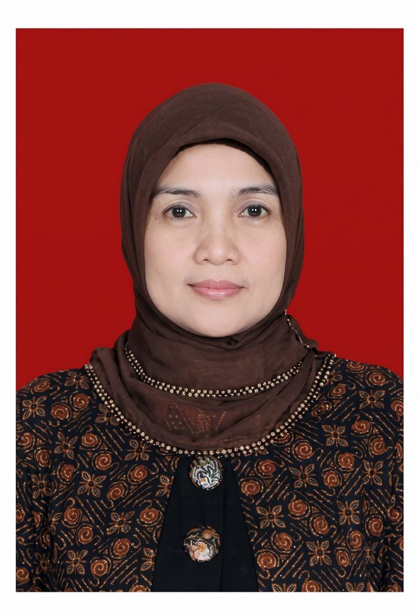

Pemimpin Rekan & Rekan Penilai Publik serta
Jaringan Kantor Nasional
Dipimpin oleh 5 Rekan Penilai Publik berizin Kementerian Keuangan RI, dengan registrasi profesi dan sektoral sesuai ruang lingkup masing-masing, serta didukung lebih dari 25 tenaga profesional pada jaringan kantor di Jakarta, Bandung, Padang, Makassar, dan Palembang.
Pemimpin Rekan & Rekan Penilai Publik
Berizin Penilai Publik Kementerian Keuangan RI, terdaftar dalam Register Menteri Keuangan (RMK), memiliki keanggotaan dan sertifikasi profesi MAPPI, registrasi/STTD OJK sesuai ruang lingkup, serta didukung Penilai Pertanahan berlisensi ATR/BPN.
Jajaran Rekan Penilai Publik dan Pimpinan Kantor KJPP NSR
Hernita, S.Si.
Rekan Penilai Publik
Muhammad Amin Sade, S.M.
Rekan Penilai Publik
Ir. Nanang Rahayu, M.Ec.Dev.
Pemimpin Rekan
Deni Siswandi, S.T.
Rekan Penilai Publik
Dharma Priyanto S.B.S., S.T.
Rekan Penilai Publik
Ir. Nanang Rahayu, M.Ec.Dev., MAPPI (Cert.)
Pemimpin Rekan / Managing Partner
Klasifikasi: Properti (P)
Deni Siswandi, S.T., MAPPI (Cert.)
Rekan / Pimpinan Cabang Bandung
Klasifikasi: Properti (P)

Hernita, S.Si., MAPPI (Cert.)
Rekan / Pimpinan Cabang Padang
Klasifikasi: Properti Sederhana (PS)
Muhammad Amin Sade, S.M., MAPPI (Cert.)
Rekan / Pimpinan Cabang Makassar
Klasifikasi: Properti Sederhana (PS)
Dharma Priyanto S.B.S., S.T., MAPPI (Cert.)
Rekan / Pimpinan Cabang Palembang
Klasifikasi: Properti Sederhana (PS)
25+ Tenaga Ahli Penilai & Multi-Disiplin Ilmu
Didukung oleh penilai beregister MAPPI, sarjana teknik sipil, planologi, agribisnis, serta analis keuangan yang menjamin kedalaman analisis setiap laporan penilaian.
Tim Penilai Profesional
Didukung Penilai Publik berizin Kementerian Keuangan RI serta tenaga penilai dengan registrasi dan sertifikasi profesi sesuai kompetensinya. Laporan penilaian ditandatangani oleh Penilai Publik yang berwenang sesuai klasifikasi izin dan lingkup penugasan.
Sipil, Mesin & Elektro
Tenaga teknis berpengalaman dalam inspeksi struktur bangunan, fasilitas industri, mesin manufaktur, instalasi elektro, dan utilitas.
Survei Lapangan & Analisis Spasial
Didukung GPS/GNSS, GIS, dan pemetaan drone untuk dokumentasi, identifikasi lokasi, serta analisis spasial sebagai data pendukung penugasan penilaian.
Analisis Finansial & Dokumen Legal
Mendukung pemodelan keuangan, analisis DCF, studi kelayakan finansial, serta telaah dokumen legal dan aspek hak atas properti yang relevan terhadap proses penilaian.
Kantor Pusat & 4 Kantor Cabang Resmi
Hadir di pusat perekonomian strategis pulau Jawa, Sumatera, dan Sulawesi untuk memberikan layanan cepat dan biaya survei yang efisien.
Kantor Pusat Jakarta
Kompetensi: Penilai Publik (P)
Alamat Lengkap: Jl. Hankam No. 5 RT 006 RW 001, Kelurahan Ragunan, Kecamatan Pasar Minggu, Jakarta Selatan, DKI Jakarta 12550.
Telepon: (021) 7884-9996 / (021) 7884-8837 | Fax: (021) 7884-9997 | WA Admin: 0851-1051-3157
Email Resmi: nanang_kjpp@yahoo.co.id / kjppnrr.bd@gmail.com
Pimpinan Rekan: Ir. Nanang Rahayu, M.Ec.Dev., MAPPI (Cert.) (Izin Penilai: P-1.09.00218)
Wilayah Penugasan: Seluruh Indonesia
Peta Lokasi: Kantor Pusat Jakarta
Jl. Hankam No. 5 RT 006 RW 001, Kelurahan Ragunan, Kecamatan Pasar Minggu, Jakarta Selatan, DKI Jakarta 12550
Bagan Kepemimpinan & Pengendalian Mutu Terpusat
Struktur organisasi resmi KJPP Nanang Rahayu Sigit Paryanto dan Rekan yang menghubungkan Pimpinan Rekan, Komite Standar & Mutu, Kantor Pusat Jakarta, serta 4 Kantor Cabang.

Butuh Pendampingan Penilai Berizin di Wilayah Anda?
Hubungi tim pimpinan rekan atau kantor cabang terdekat untuk survei aset dan penawaran biaya resmi.